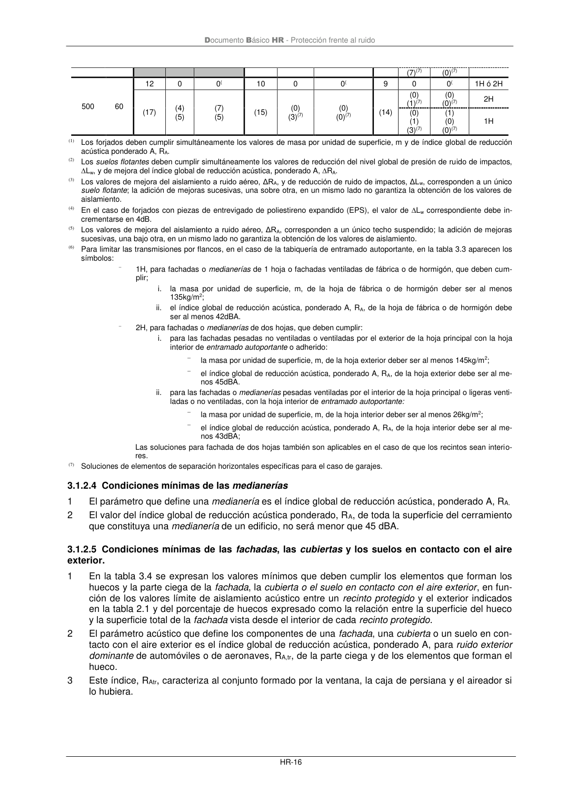

DB-HR Protección frente al ruido · edición 2019-12-20 · capa oficial
Documento DB-HR-oficial · SHA-256 del PDF a67baeca5138bb1f121f797d23a79a4557bd9ac4abacd954024893e05411eeab
Página física 22 de 80.
Copia fiel del PDF fuente · Fuente oficial
Ficha de la disposición en la fuente oficial
Formato: Texto de la página (Markdown)
Documento Básico HR - Protección frente al ruido HR-16 (7)(7) (0)(7) 500 60 12 0 0( 10 0 0( 9 0 0( 1H ó 2H (17) (4) (5) (7) (5) (15) (0) (3)(7) (0) (0)(7) (14) (0) (1)(7) (0) (0)(7) 2H (0) (1) (3)(7) (1) (0) (0)(7) 1H (1) Los forjados deben cumplir simultáneamente los valores de masa por unidad de superficie, m y de índice global de reducción acústica ponderado A, RA. (2) Los suelos flotantes deben cumplir simultáneamente los valores de reducción del nivel global de presión de ruido de impactos, Lw, y de mejora del índice global de reducción acústica, ponderado A, RA. (3) Los valores de mejora del aislamiento a ruido aéreo, ΔRA, y de reducción de ruido de impactos, ΔLw, corresponden a un único suelo flotante; la adición de mejoras sucesivas, una sobre otra, en un mismo lado no garantiza la obtención de los valores de aislamiento. (4) En el caso de forjados con piezas de entrevigado de poliestireno expandido (EPS), el valor de Lw correspondiente debe in- crementarse en 4dB. (5) Los valores de mejora del aislamiento a ruido aéreo, ΔRA, corresponden a un único techo suspendido; la adición de mejoras sucesivas, una bajo otra, en un mismo lado no garantiza la obtención de los valores de aislamiento. (6) Para limitar las transmisiones por flancos, en el caso de la tabiquería de entramado autoportante, en la tabla 3.3 aparecen los símbolos: − 1H, para fachadas o medianerías de 1 hoja o fachadas ventiladas de fábrica o de hormigón, que deben cum- plir; i. la masa por unidad de superficie, m, de la hoja de fábrica o de hormigón deber ser al menos 135kg/m2; ii. el índice global de reducción acústica, ponderado A, RA, de la hoja de fábrica o de hormigón debe ser al menos 42dBA. − 2H, para fachadas o medianerías de dos hojas, que deben cumplir: i. para las fachadas pesadas no ventiladas o ventiladas por el exterior de la hoja principal con la hoja interior de entramado autoportante o adherido: − la masa por unidad de superficie, m, de la hoja exterior deber ser al menos 145kg/m2; − el índice global de reducción acústica, ponderado A, RA, de la hoja exterior debe ser al me- nos 45dBA. ii. para las fachadas o medianerías pesadas ventiladas por el interior de la hoja principal o ligeras venti- ladas o no ventiladas, con la hoja interior de entramado autoportante: − la masa por unidad de superficie, m, de la hoja interior deber ser al menos 26kg/m2; − el índice global de reducción acústica, ponderado A, RA, de la hoja interior debe ser al me- nos 43dBA; Las soluciones para fachada de dos hojas también son aplicables en el caso de que los recintos sean interio- res. (7) Soluciones de elementos de separación horizontales específicas para el caso de garajes. 3.1.2.4 Condiciones mínimas de las medianerías 1 El parámetro que define una medianería es el índice global de reducción acústica, ponderado A, RA. 2 El valor del índice global de reducción acústica ponderado, RA, de toda la superficie del cerramiento que constituya una medianería de un edificio, no será menor que 45 dBA. 3.1.2.5 Condiciones mínimas de las fachadas, las cubiertas y los suelos en contacto con el aire exterior. 1 En la tabla 3.4 se expresan los valores mínimos que deben cumplir los elementos que forman los huecos y la parte ciega de la fachada, la cubierta o el suelo en contacto con el aire exterior, en fun- ción de los valores límite de aislamiento acústico entre un recinto protegido y el exterior indicados en la tabla 2.1 y del porcentaje de huecos expresado como la relación entre la superficie del hueco y la superficie total de la fachada vista desde el interior de cada recinto protegido. 2 El parámetro acústico que define los componentes de una fachada, una cubierta o un suelo en con- tacto con el aire exterior es el índice global de reducción acústica, ponderado A, para ruido exterior dominante de automóviles o de aeronaves, RA,tr, de la parte ciega y de los elementos que forman el hueco. 3 Este índice, RAtr, caracteriza al conjunto formado por la ventana, la caja de persiana y el aireador si lo hubiera.

Datos candidatos: compruebe celdas y notas en el PDF.